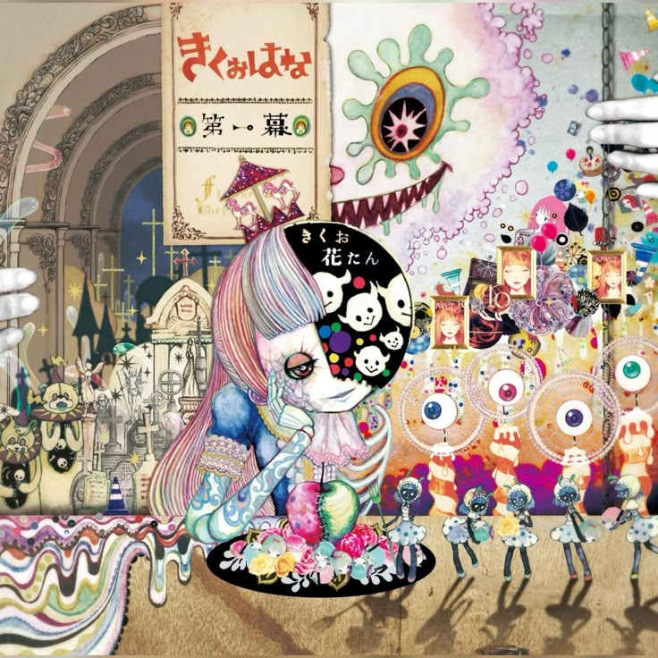

En 2016, Kikuo colaboró con utaite Hanatan para crear
un álbum titulado First Act (第一幕). Los dos se llamaron
a sí mismos KikuoHana (きくはな), una combinación del
nombre de Kikuo y el comienzo del nombre de Hanatan.
El dúo creó otro álbum en 2017 titulado Second Act
(第二幕). En la sesión de preguntas y respuestas de Kikuo
en Kumoricon, anunció la posibilidad de un tercer álbum
cuando se le preguntó si alguna vez colaboraría con Hanatan.